Aktiecase - Raketech
Update Q3
Oscar är grym.
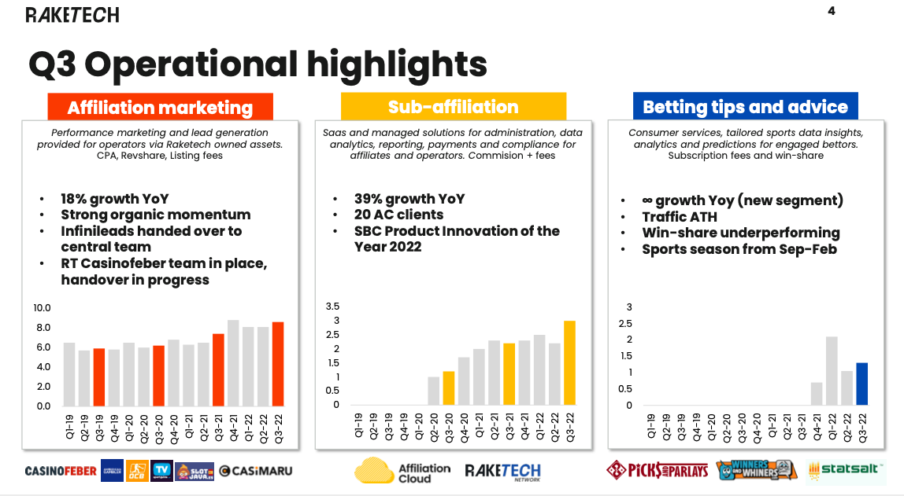
20 st kunder för Affiliate Cloud (AC), vilket är helt grymt, produkten har existerat sedan maj 2022. Oscar vill inte särredovisa AC pga det finns konkurrenter som kan dra nytta av den informationen.
Oscar anser att det är ‘väldigt realistiskt’ att Raketech lyckas omsätta 10 miljoner euro inom 2 år genom AC. Efterfrågan finns därute och Raketech har blivit positivt förvånad av hur det tas emot av marknaden.
US Affiliation
Rikard Engbergs tankar kring Raketech efter att ha besökt bolaget på Malta, startar 42 minuter in:
Jag tror att Raketech omsätter ca 522 miljoner med en vinstmarginal på 18 procent vilket är 94 miljoner i vinst. Med det sagt handlas Raketech till P/E 8 idag.
Jag gissar att Raketech kommer att öka omsättningen under 2023 till 642 miljoner med en marginal på 20 procent, därmed 128 miljoner i vinst. Det innebär att bolaget handlas till P/E 5,8 om kursen står still, eller ca 25 SEK/aktien om bolaget fortsatt handlas till runt P/E 8. När bolaget idag handlas runt 18 kr aktien är det mer än 30 procent margin of safety vilket upplevs tillräckligt.
Högre andel av intäkter från Sub-affiliation är också en nätverkseffekt vilket är högre kvalité på intäkterna enligt mig då dessa klassas som mer sticky än egen affiliate marketing.
Erik Penser Bank med Rikard Engberg i spetsen har en riktkurs på Raketech på 31-33 SEK. Rimligt om Affiliates inte hade varit hatade av marknaden. Analysen går att tillgå här.
Allt nedan är skrivet den 31e juli 2022
Tänk på att investeringar alltid innebär ett risktagande. Gör alltid din egen analys innan eventuell handel. Jag tar inget ansvar för vad ni väljer att göra med denna information.
Sammanfattning
Raketech är ett affiliatebolag riktat mot iGaming branschen genom casino (66 procent) och sportsbetting (34 procent). Fokus för bolaget är att ta marknadsandelar i USA, vilket fler av Raketechs konkurrenter kämpar för också. Oscar Mühlbach är vd i bolaget och jag anser att han är en trovärdig ledare och gör det som han säger att han ska göra. Grundarna finns kvar i bolaget och sitter i styrelsen och äger runt 20 procent av bolaget. Största risken enligt mig är SEO risken, att Google ändrar i sin algoritm.
Efter en värdering baserat på \(\frac{EV}{EBIT}\) så anser jag att bolaget är värt 28 SEK per aktie, vilket är mer än dagens aktiekurs runt 18 SEK per aktie. Konkurrenten Better Collective ser också interessant ut, värt att analysera vidare.
Bakgrund
Raketech är ett bolag som finns noterat på First North under tickern RAKE. Namnet RakeTech kommer från begreppet Rake och Tech, där rake är en term som innebär den avgift som en speloperatör tar på spelet och tech syftar på teknik. Det är viktigt med rake i spel där spelarna spelar mot varandra och inte mot huset (till skillnad från blackjack där det är huset som är motståndaren).
Raketech grundades 2010 med syftet att hjälpa spelare att hitta de bästa sidorna att spela på. Bolag klassas som ett affiliate bolag inom branschen iGaming. Med en handfull av B2B-tjänster servar Raketech kunder till iGaming operatörer. Raketech har 108 personer som är anställda och 125 konsulter. Företaget är baserat på Malta, vilket enligt förra vd beror främst på att det är viktigt att ha nära till kunderna (speloperatörer).
Raketechs mission är att erbjuda tjänster till kunderna som hjälper att ta informerade beslut
Från start till idag
År 2010 grundades bolaget och första åren fokuseras på att göra lead generation produkter som lanserades under mars 2010. Två år senare vrids fokus mot att skapa tjänster för affiliate för casino operatörer. år 2014 påbörjas en resa för att förvärva andra konkurrenter och året efter förvärvas bland annat Casinoguide.se.
År 2016 flyttar Raketech till Malta och året efter det så förvärvas första produkten som fokuserar på sportsbetting affiliate. År 2018 förvärvas supersajten Casinofeber.se, som är den största sajten Raketech har i Norden. Samma period kommer bolaget till börsen och förvärven tilltar. I slutet av 2019 kliver Oscar Mühlbach in som koncernchef och vd. Under slutet av 2020 tar Raketech klivet in i amerikanska marknaden genom förvärvet av American Gambler.
Tidigare var Raketech involverade i marknaden för konsumentkrediter, där finansinspektionen var kritiska mot företagets sajter. Dagens Industri publicerade under 2020 en kritisk artikel mot bolaget med följande bild.
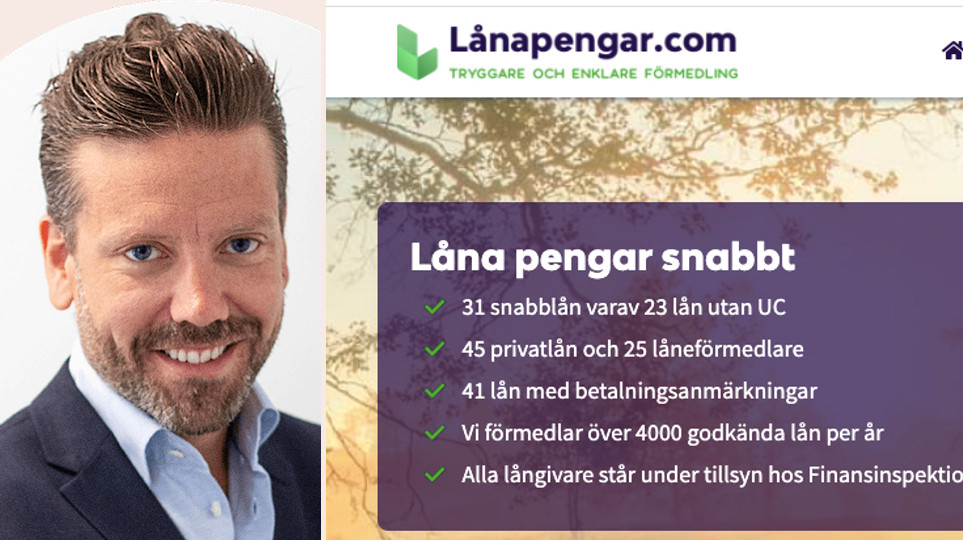
Raketechs vd Oskar Mühlbach har sedan dess sålt av kreditbolagen för att renodlat fokusera på affiliate marketing mot iGaming. Försäljningen ägde rum i November 2020. Jag anser att det är bra att Raketech fokuserar på sin kärnverksamhet.
Verksamhet
Verksamheten handlar om att länka kunder till olika gambling sidor, där varje speloperatör betalar för kunder som länkas till sajterna och signar upp.
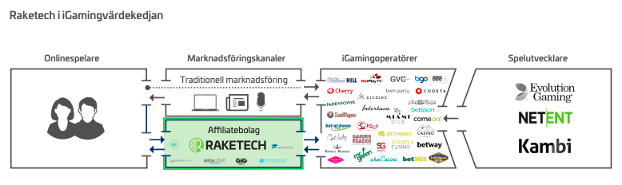
Bilden är tagen från Raketechs börsnoteringsprospekt.
Affiliation
Affiliation som är ett ganska nytt begrepp som dykt upp i samband med att det numera är möjligt att rikta sina marknadsföring mot en specifik grupp av personer och där kunderna betalar för resultat till skillnad från att bara marknadsföra sig brett och hoppas på att någon i bredden nappar. Affiliation kan också jämföras med tjänster som hotels.com och booking.
Kunder grupperas genom communities, jämförelsetjänster, nyheter och information samt datajämförelser. Betalningsmetoderna består av Commissions per Action (CPA), Revshare och Media/annonser. CPA innebär att en kund besöker en hemsida, klickar på en länk och gör en action som att signa upp.
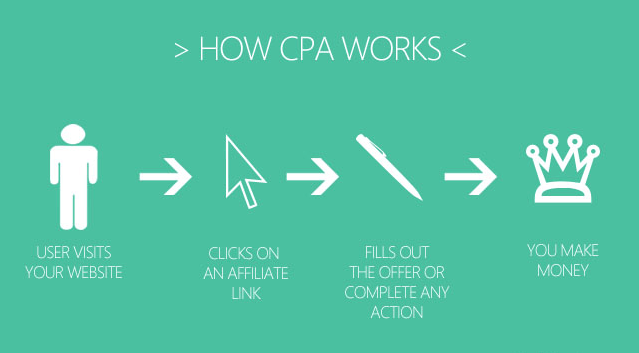
Pengarna som Raketech tjänar genom att en kund tjänar pengar. Det är då superviktigt att Raketech lyckas få en kund genom hela flödet, vilket är en win/win för operatören och Raketech.
Jämförelsesajter är de mest populära, speciellt i gråa marknader där det är mindre andel pålästa kunder och nya tjänster kommer ut löpande.
Fortsättning verksamhet
Intäkterna består av 65,5 procent casino och 34,2 procent sportsbetting samt 0,3 procent av andra intäkter. Sportsbetting har ökat markant från låga 17 procent till 34,3 procent under senaste året. Intäkterna kommer geografiskt från 43, 5, 19, 33 procent från Norden, övriga europa, USA och resterande världen. Norden är störst, där sajten Casinofeber är huvudsakliga drivaren av intäkter. Rörelsemarginalen för hela koncernen är 25,6 procent under senaste kvartalet (Q1 2022).
Organiska tillväxten för bolaget 6,8 procent (5,4 procent) under Q1 2022. Med förvärven är tillväxten 53,3 procent, där förvärven är av amerikanska och indiska bolag. Det finns ingen tydlig information kring hur fördelningen av källan till intäkterna ser ut, allt verkar gå under “commissions”, där både revenue share och CPA klumpas samma. I en presentation från maj 2021 framgår det följande däremot:
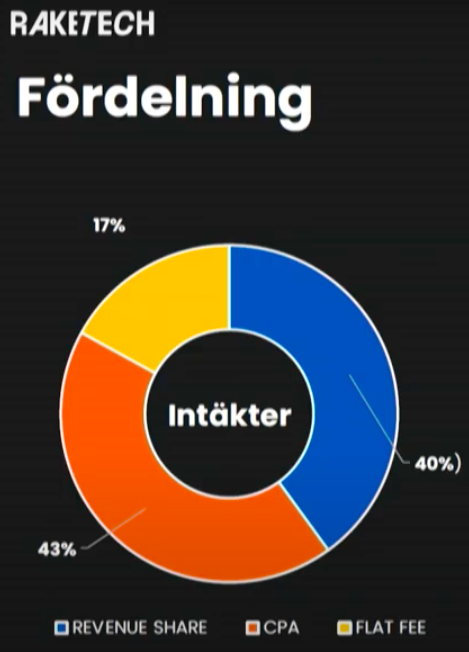
Revenue share är relativt hög med 40 procent och lite mer CPA.
Verksamheten kan vidare delas in i tre olika segment: Affiliate marketing, Network och “Betting tips and subscription income”.
Affiliate marketing
Syftar till inkomster genom egna bolaget som klassas som affiliate marketing.
Q1 2022 revenue segments
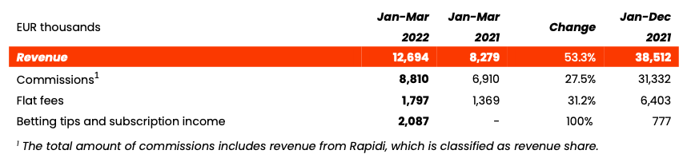
Revshare modellen är bättre för att få återkommande intäkter, CPA är bra på kort sikt. 83.6 procent av omsättningen är kopplat till Affiliation eller Network. Av dessa runt 83 procenten är antagligen runt 30-40 procent revshare vilket ger en bra återkommande intäkt.
Network
Network handlar om intäkter genom förvärvet av Lead Republic. Network syftar till att använda sig av under affiliates. Antagligen är detta kopplat till Affiliate Cloud? Det framgår inte särskilt tydlig vad Network är förutom att det är en tjänst för under affiliates. Framgår inte hur stor andel av omsättningen som är Network.
Betting tips and subscription income
Betting tips syftar till en tjänst för professionella spelare på sport genom att leverera insikter. Det är en tjänst som finns tillgänglig i USA genom Raketechs förvärv av ATS consultants. Det framgår inte hur stor andel av omsättningen som är från detta segment, men räkna med att det är fokus på sport.
Betting tips är 16,4 procent av omsättningen i Q1 2022 vilket är mer än vad konkurrenterna har som andel i dessa typer av tjänster.
Finansiella mål
- 30 procent årlig tillväxt i omsättning
- 50 procent EBITDA marginal
- 1.5x-2-5x nettoskuld/EBITA
Raketech just nu jämfört med målen
- Omsättning - 37,9 procent
- EBITDA marginal - 42 procent - senaste året har marginalen långsamt kryper närmare 50 procent.
- Nettoskuld/EBITDA senaste åren - Just nu 0,69

Varumärken
Finns fler varumärken och bolag som Raketech har, det är totalt över 100 hemsidor och jag har inte samlat in alla utan fokuserar på bolagsnivå.
Sverige
Casinofeber - Stort i Sverige. Tvmatchen.nu är också ett stort varumärke.
Indien
Cricket är en enorm sport i Indien där onlinecricketbetting är den största sidan för att betta. Se sajten Onlinecricketbetting.
Japan
Casumba media är aktiva i Japan.
Spansktalande och Italien
Infinileads - Affiliate sajter som fokuserar på spansktalande länder (Spanien och latin amerika) samt Italien.
Amerikanska förvärv
QM Media är det största förvärvet som Raketech har gjort i september 2021. QM media förvärvet omfattar även dotterbolaget P&P Vegas Group. QM Media är även en av de största ägarna med ca 9 procent av aktierna i Raketech.
American Gambler ger exponering mot amerikanska marknaden. American Gambler var det första förvärvet som genomföres i USA.
ATS Consultants - amerikanska tjänster, bidrar mycket till omsättning i USA under Q1 2022. Tjänsterna omfattar ett nytt segment för Raketech då ATS consultants erbjöd en betting tips tjänst för professionella spelare på sport.
Risker och osäkerheter
Regleringen av marknaden för iGaming operatörerna är pågående och allt fler länder blir reglerade vilket är bra för Raketech. Däremot förväntas det att vägen dit blir stökig, med flertalet kunder till Raketech som blir drabbade av nya regelverk utan att hinna ställa om vilket innebär att intäkterna ej kommer att vara spikraka och däremot mer riskfyllda. Regleringen anses av Raketech själva vara den största. Andra risker är kreditrisk (kunder betalar försent, leder till likviditetsproblem), marknadsrisk (ogynnsamma förändringar av räntor) samt operationell risk (Google förändrar hur SEO fungerar).
Jag anser att Raketech hanterar dessa risker genom att sprida sina intäktsströmmar genom casino, sportsbetting, geografisk spridning samt många kunder. Att räntorna skulle öka så pass mycket så att raketech får problem anser jag låg. Operationell risk med Google är ett större bekymmer, då större delen av affären baseras på att SEO fungerar som den gör idag.
Lågkonjunktur vore också tufft för bolaget, men den geografiska spridningen hjälper delvis med detta. Förhoppningsvis går inte alla marknader dåligt samtidigt.
Förvärv
Förvärv är en viktig del i framtida tillväxt för Raketech. Under 2021 genomfördes ett flertal förvärv i USA, vilket är en nyckelmarknad i framtiden som ska växa mycket.
Nyckeltal
New depositing customers (NDC) är ett mått för att mäta antalet kunder som gör insättningar. Ett viktigt mått för mäta hur mycket pengar som sätts in och detta korrelerar med hur intjäningen ser ut över tid. Q1 2022 var det 35,5k nya kunder, vilket generellt låter lite. Jämför det med Better Collective som under Q1 2022 hade 360k nya kunder, där 260k var revshare kunder (återkommande intäkter).
Jag hoppas att vi får ett trendbrott för NDC, detta måste öka för att få bra tillväxt över tid.
Ledning
Ledningen i Raketech uppfattar generellt som stark, Oskar framförallt är en huvudperson som har vänt bolaget sedan han tog över stafettpinnen som vd.
Oskar Mühlbach (CEO)
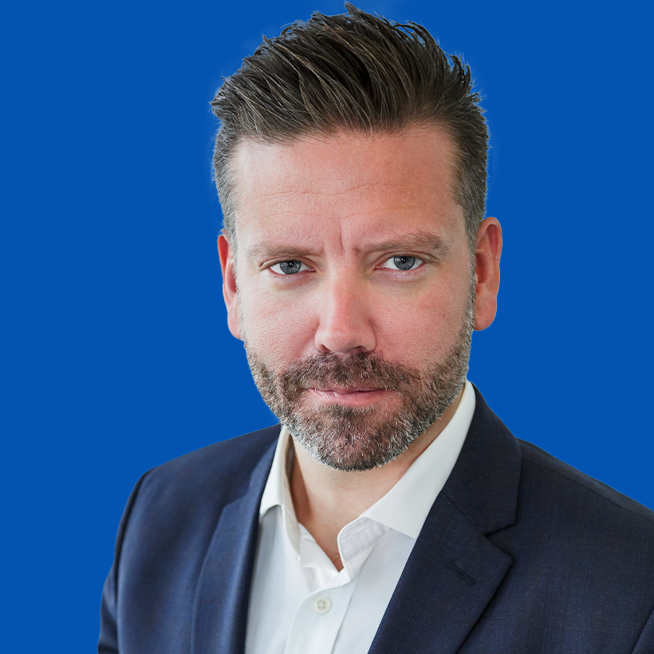
Oskar har tidigare jobbat på William Hill under varumärket Mr Green som är en speloperatör, Oskars roll var chief venture officer som innebär antagligen en hel del fokus på förvärv. Tidigare har Oskar haft ledande roller på en rad kedjor som Footway, eleven AB och Lensway. Han är född 1980. Utbildning: Civilingenjör Industriell ekonomi från Luleås tekniska universitet.
Shares: 171,261 (ca 0,4% av hela bolaget) - Warrants/options: 556,204
Oskar under sin tid på Lenslogistics, en sann problemlösare.
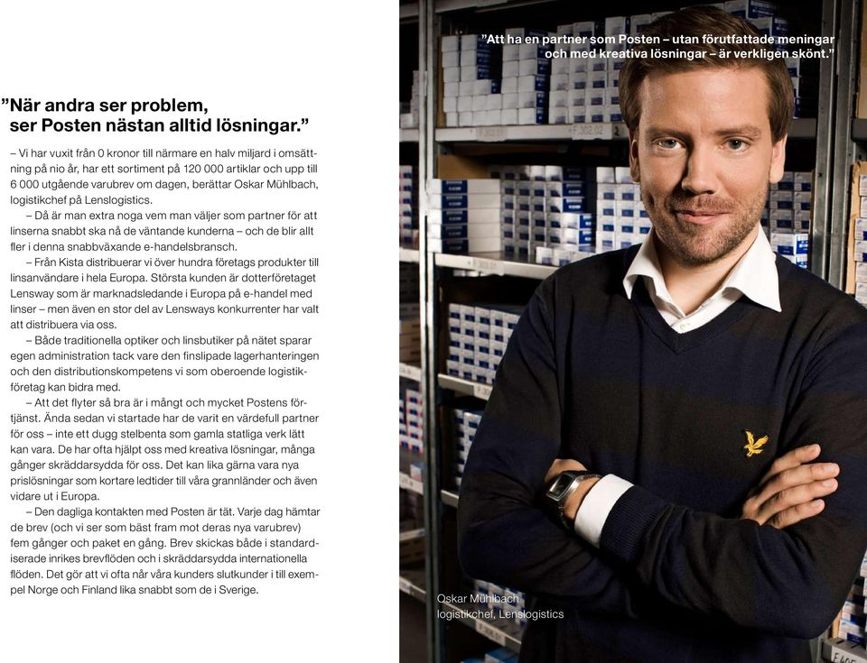
Trovärdighet
Oskar pratar i maj 2021 om att Raketech ska växa framåt genom att diversifera sina förvärv. Det ska vara globala förvärv och ha en hög takt. Se video nedan:
Med facit i hand, runt 14 månader senare går det att säga att detta har Oskar gjort, förvärven har rullat på och Raketech har bland annat köpt ett indisk bolag som har precis dessa egenskaper. Jag anser att Oskar är trovärdig. Vidare kommenterar Oskar att han vill se en ökad andel av sportsbetting i portföljen, vilket också har skett då sportsbetting ökat från 17 procent till 34 procent på ett år.
Måns Svalborn (CFO)
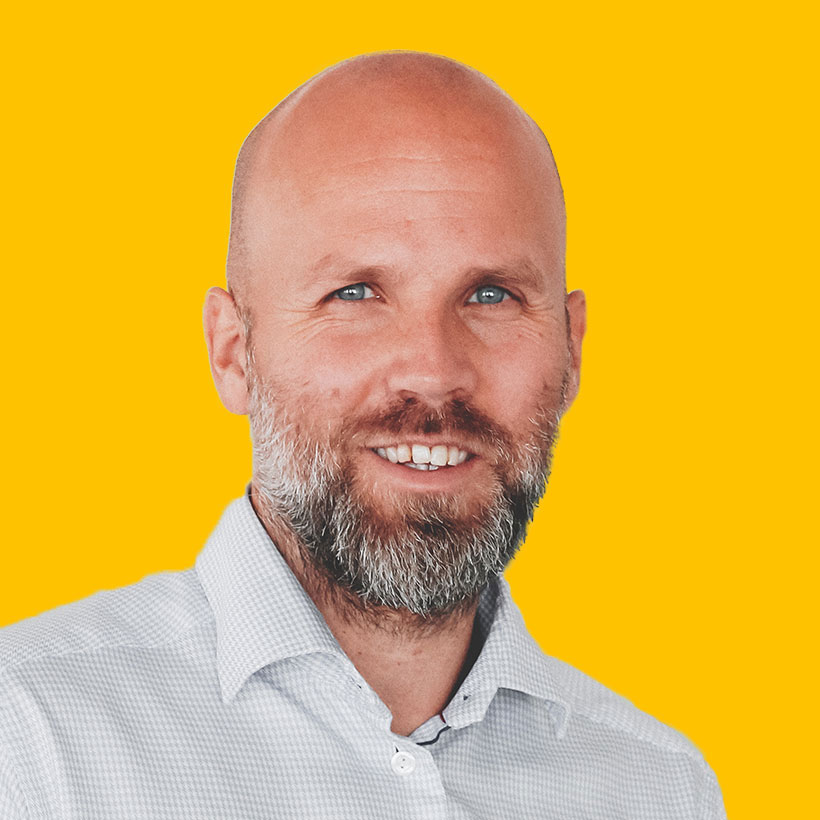
Bakgrund inom mycket ekonomi, bland annat Nordea och sedan som CFO på Raketech.
Shares: 10,000 - Warrants/options: 207,241
Oscar Karlsten (COO)
Tidigare chief product officer och chief information officer på konkurrenten Catena media. Köttigt CV!
Shares: 0 - Warrants/options: 147,241
Andreas Kovacs
MD på Raketech inom business development. Tidigare CFO på Raketech.
Shares: 18,630 - Warrants/options: 130,000. Född 1984.
Styrelse
Ulrik Bengtsson (Styrelseordförande)
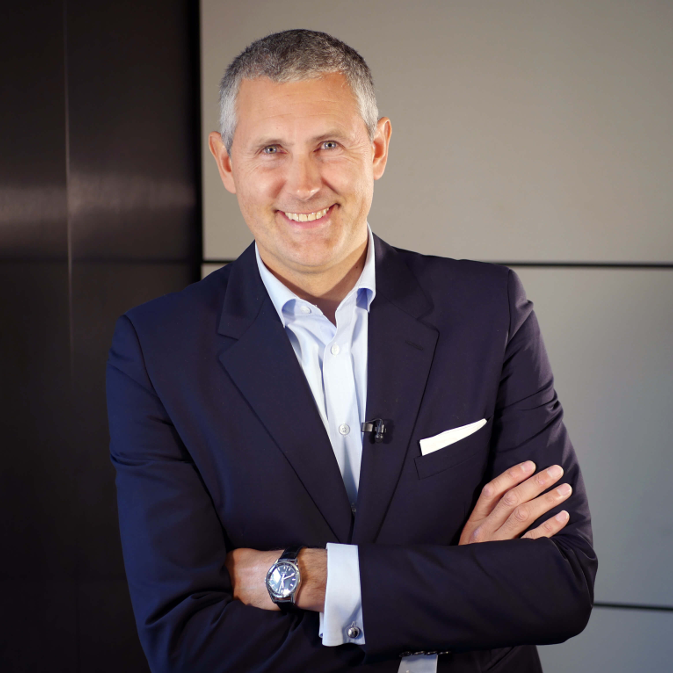
Shares: 35,000
Nuvarande 1972, vd på William Hill. Oskar Mühlbachs jobbade tidigare på Mr green som sedan blev uppköpta av William Hill, så det finns en koppling mellan bolagen. Ulrik var tidigare vd på Betsson fram till 2017.
Johan Svensson (Founder of Raketech & board member)
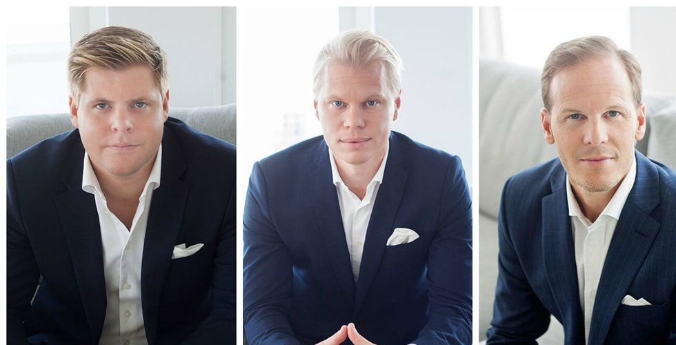
Shares: 3,265,000
Owner of shares through a cyprus company. Tidigare involverad i bolaget Bethard som Erik Skarp numera driver och är vd för Född 1985.
Erik Skarp (Founder & board member)
Shares: 3,353,265
vd för bolaget Bethard som är en speloperatör samt bolaget Together gaming som är en form av spelplattform. Bethard kallas även av flertalet mediasajter för “Zlatan Ibras bettingbolag”. Född 1985. God vän med Johan Svensson. Se bild ovan.
Magnus Gottås (board member)
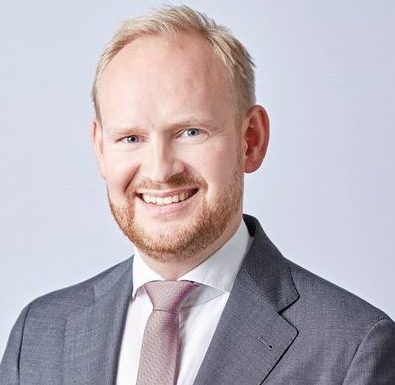
Shares: 507,407 - Born 1978
Valberedningen
Valberedningen är lite lurig, där sitter Tobias som inte är så lätt att hitta information om.
Martin Larsson
Martin larsson var tidigare vd i bolaget och även haft ett finger med i Bethard. Han lämnade Raketech under 2018 och sitter numera i valberedningen.
Tobias Persson Rosenqvist
Enligt Aftonbladet är Tobias Persson under år 2010 en av de främsta spelarna inom trav. Det är väldigt svårt att hitta en bild på Tobias.
Tobias är mycket svår att få tag i information om, även fast han är den största ägaren i Raketech. Han har tagit bort sig själv på Mrkoll, men det går att hitta han genom bolagsengagemang. Enligt Mrkoll så bor hans tjej på Torstenssonsgatan 3 i Stockholm, antagligen bor han där med. Jag baserar detta på att det står att han är aktiv i ett par bolag som även hans tjej är aktiv i. Hennes lägenhet är värderad till ca 63 800 000 kr, ungefär lika mycket som alla aktier Tobias har i Raketech.
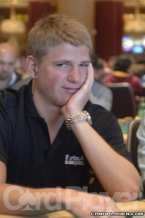
Kort och gott går det att säga att Tobias verkar gilla hästar, pengar i offshore konton samt att vara en anonym typ som inte skapar något oväsen.
Ägare
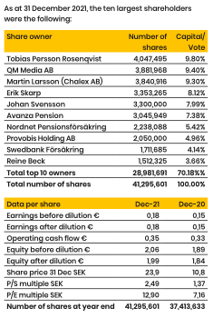
Tobias Persson Rosenqvist är Raketechs största ägare. QM Media är ett förvärvat bolag som är baserat i USA. Martin Larsson är en tidigare vd i bolaget och en vän till grundarna Johan Svensson och Erik Skarp.
Insideraktivitet
Insideraktiviteten enligt Finansinspektionen mycket låg, det händer att Johan Svensson kastar in en stek utöver det han redan äger.
Marknaden
För att få en känsla för hur stor marknaden som Raketech och konkurrenterna jobbar med är. Viktigt att förstå att Raketech inte direkt är utsatt för marknaden utan är en B2B leverantör, därför ska inte Raketechs omsättning jämföras med den totala marknaden.
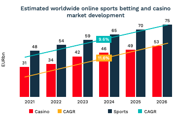
Över tid kommer marknaden att bli större, framför allt i USA.
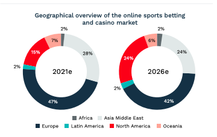
Mycket tillväxt kommer från att landbased casinos går till digitala motsvarigheter. Även avregleringar i USA är en huvudsaklig trigger för tillväxt, detta återspeglas av många inom branschen som pekar på samma sak.
Konkurrenter
Konkurrenterna är små och stora. Här listas ett par av de jag anser värda att bryta ner. Konkurrenterna i första anblick verkar vara Better Collective, Gaming Innovation Group och Catena Media. Även Future Gaming Group har dykt upp som en konkurrent.
Better Collective
Better Collective är en stor dansk konkurrent, med en omsättning på 2118 mkr. Börsnoterat i Sverige med ett börsvärde på 8670 miljoner SEK, vilket är strax över 10x större än Raketech.
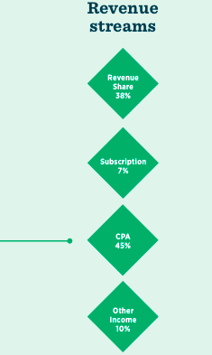
Liknar Raketechs fördelning av källintäkter.
Precis som Evolution och Raketech så storsatsar Better Collective på att ta den amerikanska marknaden i samband med att den öppnar upp. Better Collective själva anger stora amerikanska events som Superbowl och March Madness som starka bidragare till de senaste kvartalets resultat.
Jämfört med Raketech är Better Collective högre skuldsatt, med en \(\frac{EV}{EBITDA}=2,2\) som kan jämföras med Raketechs 1,1. 2,2 behöver inte vara för högt då bolaget anger att de är villiga att fortsätta så länge man är under 3.
Better Collective har även en otroligt stark organisk tillväxt med 44 procent att jämföra med Raketech 6,8 procent. Detta beror främst på att Better Collective har stor andel revshare i sportsbetting med kunder som är återkommande till sidorna för att lägga nya bets. Bara under Q1 2022 fick Better Collective >360k kunder, där 230k var under revshare.
Starkt ägande från ledningen där ledningen äger massvis med aktier!
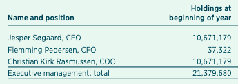
55 miljoner aktier finns det i Better Collective och 21,3 miljoner aktier ägs av ledningen hälften av vd och andra halvan av COO. Det är 38,7 procent av hela bolaget.
Better Collective äger även andra fina varumärken som HLTV, där det är många som går in för att följa CSGO marknaden, likt ett Reddit. Det som skiljer Better Collective med Raketech är den stora andelen återkommande intäkter genom revshare som leder till organisk tillväxt.
Det som är problematisk för Raketech är att Better Collective kan få en hel del kunder som fastnar hos Better Collective och det kan bli mycket dyrt att få över dessa fina kunder in i Raketechs bok. Raketech däremot har bättre geografisk spridning, med verksamhet i Indien och Japan.
Catena Media
Raketech är små jämfört med Catena Media. Catena Media omsätter 1 483 mkr att jämföra med 448 mkr för Raketech. Mats Qviberg gillar catena media, det är en bra grej för Raketech. Catena media har samma verksamhetsområden, men pratar även på sin hemsida att det är möjligt att applicera deras lead-generation teknik på fler verksamhetsområden än betting. Exemplet är däremot betting som väntat.
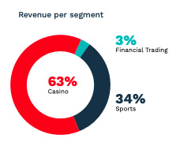
Catena Medias största andel av intäkterna kommer från casino. Intressant not så ser fördelningen mellan casino och sportsbetting exakt likadan ut som den gör i Raketech.
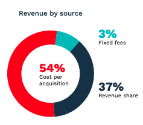
Majoriteten av intäkterna kommer från cost per action (CPA) för Catena Media. Det är bättre med revshare generellt då det bidrar med långsiktiga intäkter.

Intressant risk som Catena Media drar upp. SEO risken, att Google ändrar i sin algoritm klassas som den största risken som bolaget möjligen kan utsättas för. Liknande finns det troligen för Raketech.
Spontant ser det ut som att Catena Media ser dyrare ut än Raketech.
Gaming Innovation Group
Gaming Innovation Group är ett norsk bolag som sysslar med affiliate med. Verkar inte vara så intressant. Haft problem med lönsamhet och ledningen äger inte särskilt mycket. Geografiskt aktiva i europa, nord- och sydamerika.
Andra konkurrenter
Andra konkurrenter för Raketech är bolag som exempelvis reklambyråer och fler som hjälper företag att nå kunder. Det är skillnad på affiliate och bred marknadsföring, men målet är detsamma.
Det finns säkert många bolag som konkurrerar med Raketech. Generellt är det en relativt fragmenterad marknad och därför är förvärv väldigt intressant. Raketech kan använda sina förvärvskapacitet här för att köpa bolag. Enligt prospektet som genomfördes under 2017 så är de största konkurrenterna ca 15 procent av marknaden vilket innebär att det finns mycket att hämta genom förvärv.
Triggers
Största triggern enligt mig är att USA avregleras. Det är en gradvis process och kommer över tid ge intäkter.
USA avregleras
Enligt H2GC ska världsmarknaden för sportsbetting och casino öka under kommande 5 år mellan 2021 och 2026. Där största förändringarna sker är det i USA, i samband med att amerikanska marknaden kommer att avregleras och därmed att andelar från resterande delarna av världen. Under 2021 var amerikanska marknaden 14 procent av totala marknaden, denna kommer vara 24 procent under 2026.
Affiliate cloud
Affiliate cloud, i dagsläget är det inte så mycket fokus på detta. Frågan är om någon ens använder sig av detta. Troligen kommer dessa intäkter att gå till segmentet Network. Jag har inte med Affiliate cloud i mina värderingar än, men absolut en intressant option.
ESG omformuleras
ESG får en ny innebörd. Nuvarande klassas iGaming-bolag som ohållbara rent socialt då det inte är “bra för människor”. Jag anser att det inte är korrekt utan det är bättre att investeringar sker i branschen för att göra branschen hållbar, istället för alternativet som är princip att marknaden är svart och sker under radarn.
Aktien
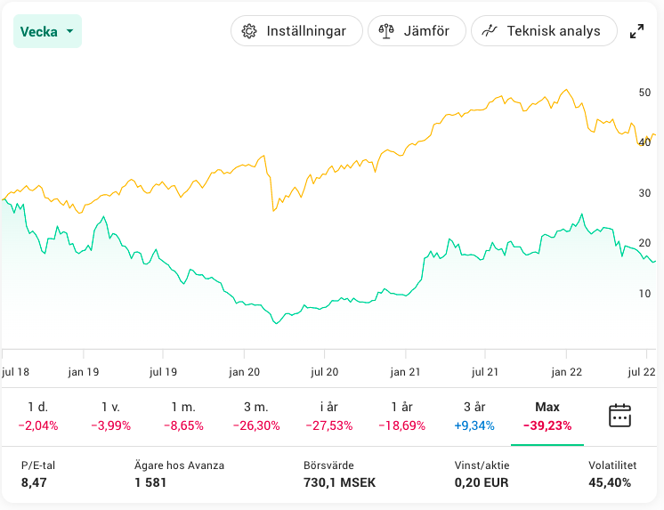
Det finns 41,3 miljoner aktier. Aktiekursen är ca 17,2 SEK per aktien. Börsvärdet är 710 miljoner och Enterprise value är 840 miljoner. Finns noterat på First North. Runt 45 procent av alla aktier är free float.
Värdering
Värdering av Raketech baseras på en \(\frac{EV}{EBIT}\) modell. Enligt Nordeas analys så kommer Q2 2022 ha negativ organisk tillväxt pga Casinofeber har tuffa jämförelsesiffror.
EV/EBIT
Jag anser det rimligt att värdera Raketech baserat på Entreprise value relaterat till rörelseresultatet, detta är likt P/E-talet med skillnaden att EV tar hänsyn till skuldsättningen i bolaget och rörelseresultatet kan användas för att betala av skulder istället för att bli vinst på sista raden.
Just nu är Raketechs \(\frac{EV}{EBIT}\) följande:
\[\frac{EV}{EBIT} =\frac{867}{115}=7.53913\]
För ett bolag som växer med 30 procent är det mycket lågt. Även med den organiska tillväxten under kvartal 1 i 2022 på 6,8 procent är 7,54 i \(\frac{EV}{EBIT}\) lågt. Utan förvärv så byggs en kassa upp också, vilket kan användas för att sänka skuldsättningen i bolaget och därmed ge en bättre multipel.
Jag anser däremot det osannolikt då finansiella målet för Raketech är 1,5x-2,5x vilket ska jämföras med 1,1x i dagsläget. Detta innebär rimligtvis att Raketech letar efter förvärv att använda kassan på, samt för att nå finansiella omsättningsmålet på 30 procent.
Bara under Q1 2022 lyckas bolaget växa med 11,1 procent på QoQ, vilket är en god grund för att nå 30 procent omsättningstillväxt under 2022. Med en omsättningstillväxt på 30 procent resulterar det i att \(\frac{EV}{EBIT}\) kryper ner till 6,7 i slutet av året. Då antar jag ett litet förvärv som använder kassan för att nå 30 procent omsättningstillväxt och liknande skuldsättning.
År 2023 blir multipeln 5,8 givet att bolaget växer med blyga 15 procent. Detta tror jag inte att bolaget kommer att uppleva utan jag tror att kursen kommer att hänga med upp till åtminstone \(\frac{EV}{EBIT}=10\). Antar en EBIT marginal på 25 procent (Q1 2022: 25,6 procent) för både helåret 2022 och 2023.
Givet att bolaget levererar 130.65 miljoner i ebit för helåret 2022 så värderar jag hela bolaget till 1177 miljoner, vilket är 28,5 SEK per aktie.
Om tillväxten med 15 procent fortsätter under år 2023, enligt antagande ovan så värderas då en aktie till 33,2 SEK per aktie.
Värderingen 22E: 28.5 SEK
Värderingen 23E: 33.2 SEK
Case
Raketech positionerar sig väl efter att ha avyttrat tillgångar som ej är kärnverksamhet och har lyckats med att få geografisk spridning av intäkterna. Jag tror Raketech kan framåt fortsätta sin förvärvsresa då \(\frac{Nettoskuld}{EBITDA}\) fortfarande är mindre än 1.5x. Antagligen ser vi ett förvärv i höst kopplat till den amerikanska marknaden, förhoppningsvis är det mer revshare så den organiska tillväxten kan öka. Marknaden har visat stark aptit för organisk tillväxt inom sportsbetting.
Risk kontra Reward i Raketech anser jag vara bättre än i konkurrenterna Better Collective. Givetvis finns det omfattande risker i caset som jag inte känner till, men priset anser jag reflekterar detta.
Sammanfattning
Raketech är ett ganska litet affiliatebolag riktat mot iGaming branschen genom casino (66 procent) och sportsbetting (34 procent). Fokus för bolaget är att ta marknadsandelar i den avreglerande marknaden i USA, vilket fler av Raketechs konkurrenter kämpar för också. vd i bolaget, Oscar Mühlbach, anser jag är en trovärdig ledare och gör det som han säger att han ska göra. Grundarna finns kvar i bolaget och sitter i styrelsen och äger runt 20 procent av bolaget. Största risken enligt mig är SEO risken, att Google ändrar i sin algoritm.
Efter en värdering baserat på \(\frac{EV}{EBIT}\) så anser jag att bolaget är värt 28 SEK per aktie, vilket är mer än dagens aktiekurs runt 18 SEK per aktie. Konkurrenten Better Collective ser också interessant ut, värt att analysera vidare.
Bilagor
Här samlar jag delar materialet jag har använd mig av för att göra analysen.
Överblick
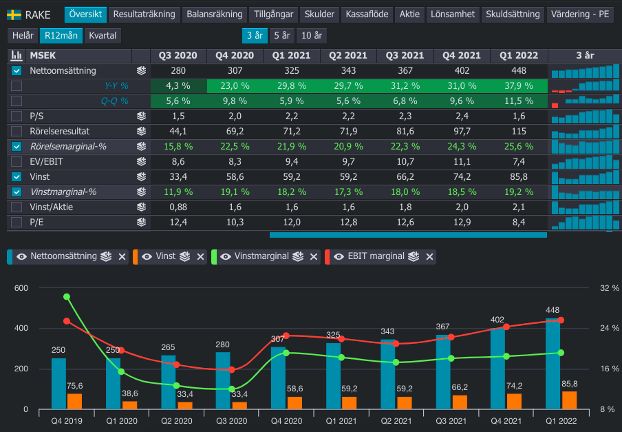
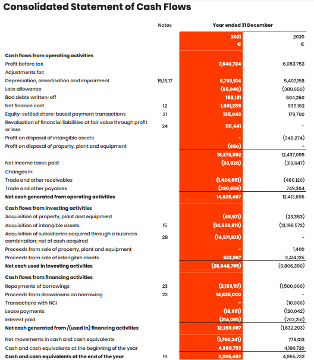